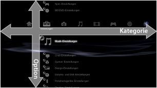
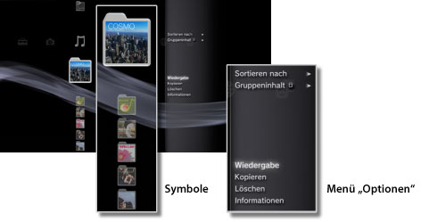
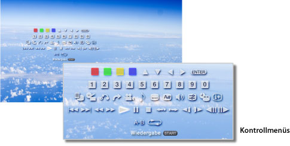

Informationen zum XMB™-Menü > Informationen zum XMB™-Menü (XrossMediaBar)
Informationen zum XMB™-Menü (XrossMediaBar)
Verwenden des XMB™-Menüs
Das PS3™-System ist mit einer als XMB (XrossMediaBar) bezeichneten Benutzeroberfläche ausgestattet. Die horizontale Zeile zeigt die Systemfunktionen in Kategorien an, die vertikale Spalte enthält die Optionen, die in den einzelnen Kategorien ausgeführt werden können.

| Richtungstasten | Auswählen einer Kategorie oder Option. |
|---|---|
 -Taste -Taste |
Bestätigen der ausgewählten Option. |
 -Taste -Taste |
Abbrechen eines Vorgangs. |
 -Taste -Taste |
Aufrufen des Menüs „Optionen“/der Kontrollmenüs. |
| PS-Taste | Aufrufen des XMB™-Menüs. |
Wiedergeben von Inhalten
Wählen Sie im XMB™-Menü die Inhalte auf der Disc oder dem Speichermedium aus und drücken Sie die -Taste. Zum Stoppen der Wiedergabe drücken Sie die -Taste.
Anmerkung
Bei einigen Modellen des PS3™-Systems ist ein geeigneter USB-Adapter (nicht mitgeliefert) erforderlich, um Datenträger nutzen zu können.
Informationsfeld
Im Informationsfeld, das oben rechts am Bildschirm angezeigt wird, werden Informationen wie die Anzahl an Freunden, die gerade online sind, Hinweise zu neuen Nachrichten und zu den neuesten unter [Neuigkeiten] verfügbaren Informationen angezeigt.

(1) |
Avatar * |
|---|---|
(2) |
Anzahl an Freunden, die gerade online sind * |
(3) |
Benachrichtigung über neuen Text-Chat * |
(4) |
Benachrichtigung über neue Nachrichten |
(5) |
Datum und Uhrzeit |
(6) |
Aktivsymbol |
(7) |
Unter [Neuigkeiten] verfügbare Informationen* |
* Wird nur angezeigt, wenn Sie beim PlayStation®Network angemeldet sind.
Verwenden des Menüs „Optionen“
Wählen Sie ein Icon im XMB™-Menü aus und rufen Sie dann mit der -Taste das Menü „Optionen“ auf. Das Menü „Optionen“ können Sie mit der -Taste ein- oder ausblenden.

Optionen im Menü „Optionen“
Welche Optionen im Menü „Optionen“ zur Verfügung stehen, hängt von der Kategorie ab.
| Wiedergabe/Starten/Ansicht | Wiedergeben von Inhalten. |
|---|---|
| Disc auswerfen | Auswerfen der Disc. |
| Löschen | Löschen von Inhalten. |
| Kopieren | Kopieren von Inhalten auf die Festplatte oder auf einen Datenträger.*1 |
| Informationen | Anzeigen von Informationen zu den Inhalten. Einige Informationen, wie z. B. der Name, können geändert werden. |
| Zur Wiedergabeliste hinzufügen | Hinzufügen von Inhalten zu einer Wiedergabeliste. |
| Alle anzeigen | Anzeigen aller Ordner auf einem Datenträger oder einem USB-Massenspeichergerät.*1 |
| Sortieren nach | Sortieren von Inhalten nach Name, Datum usw. |
| Gruppeninhalt | Ändern der Gruppiermethode zum Gruppieren nach Album, Format oder anderen Optionen.*2 |
| Mehrere löschen | Auswählen und Löschen mehrerer Inhalte auf einmal. |
| Mehrere kopieren | Auswählen und Kopieren mehrerer Inhalte auf einmal. |
| *1 |
Bei einigen Modellen des PS3™-Systems ist ein geeigneter USB-Adapter (nicht mitgeliefert) erforderlich, um Datenträger nutzen zu können. |
|---|---|
| *2 |
Inhalte, bei denen die zum Gruppieren erforderlichen Informationen fehlen, werden in einen Ordner [Unbekannt] gruppiert. Einige Inhalte werden möglicherweise nicht gruppiert. |
Verwenden der Kontrollmenüs
Während der Wiedergabe von Inhalten rufen Sie mit der -Taste die Kontrollmenüs auf. Die Kontrollmenüs können Sie mit der -Taste ein- oder ausblenden. Welche Optionen in den Kontrollmenüs zur Verfügung stehen, hängt von den wiedergegebenen Inhalten ab.

Verwenden mehrerer Funktionen gleichzeitig
Sie können mehrere Funktionen gleichzeitig nutzen. So können Sie beispielsweise unter  (Foto) Bilder anzeigen oder unter
(Foto) Bilder anzeigen oder unter  (Netzwerk) auf das Internet zugreifen, während unter
(Netzwerk) auf das Internet zugreifen, während unter  (Musik) die Musikwiedergabe läuft.
(Musik) die Musikwiedergabe läuft.
Beispiel: Anzeigen von Bildern unter (Foto) während der Musikwiedergabe unter (Musik)
1. |
Starten Sie unter |
|---|---|
2. |
Drücken Sie die PS-Taste. |
3. |
Wählen Sie unter |
Anmerkungen
- Sie können nicht Inhalte unter (Musik) wiedergeben und gleichzeitig andere Funktionen nutzen, wenn eine Super Audio CD wiedergegeben wird oder wenn
 (Einstellungen) >
(Einstellungen) >  (Musik-Einstellungen) > [Ausgangsrate] auf [44,1/88,2/176,4 kHz] gesetzt ist.
(Musik-Einstellungen) > [Ausgangsrate] auf [44,1/88,2/176,4 kHz] gesetzt ist. - Je nach dem Typ des wiedergegebenen Inhalts stehen einige Funktionen, die eigentlich gleichzeitig möglich sind, unter Umständen nicht zur Verfügung.
Hinweis
Super Audio CDs können auf einigen PS3™-Systemen nicht abgespielt werden. Näheres dazu finden Sie unter [Typen abspielfähiger Discs].